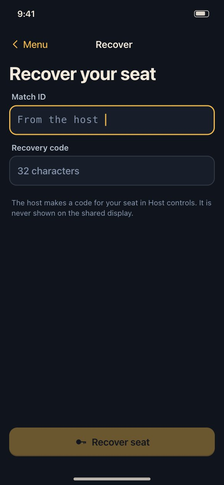
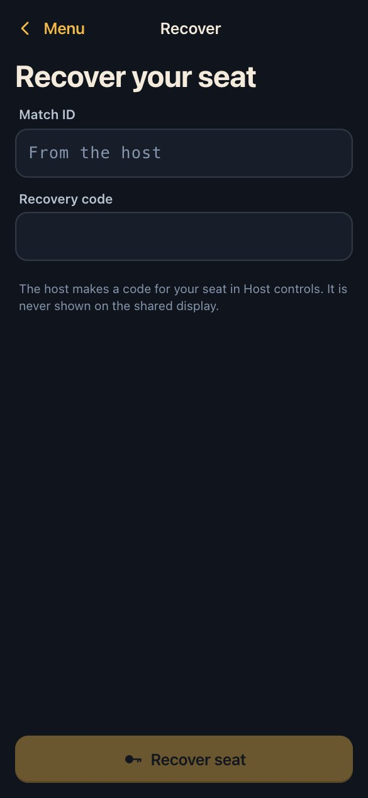

Recover a seat sheet 14
11 November 2026: Close The same two fields. The line saying the host makes the code, and that it never appears on the shared display, is missing.


How each side was drawn
The pack: /design/phone-ui/prototype/index.html?s=recover&state=entry&safe=47%2C34
The build: /?scenario=join&count=9&tuple=phone, then [["wait",4500],["tap","#planet-entry-recover, .planet-pregame-host [data-intent=\"recover\"]"],["wait",600]]